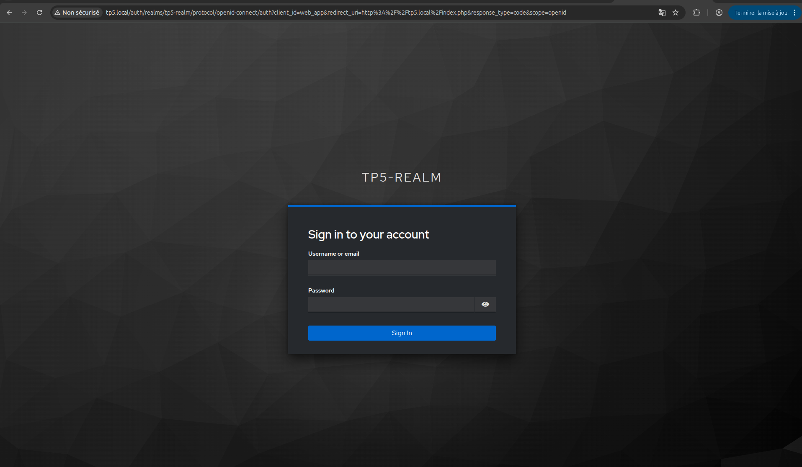
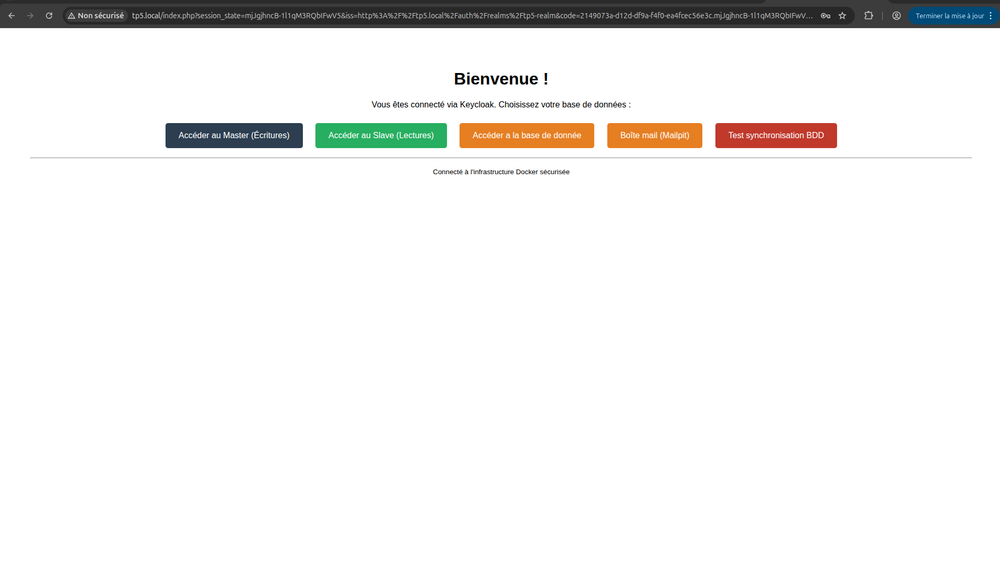
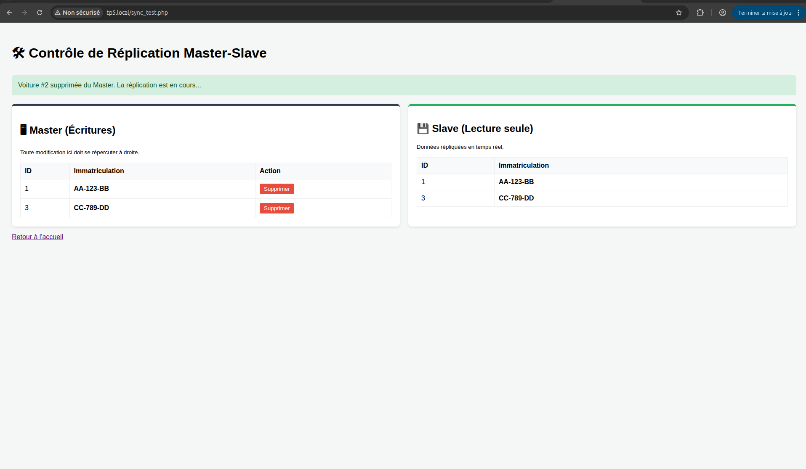
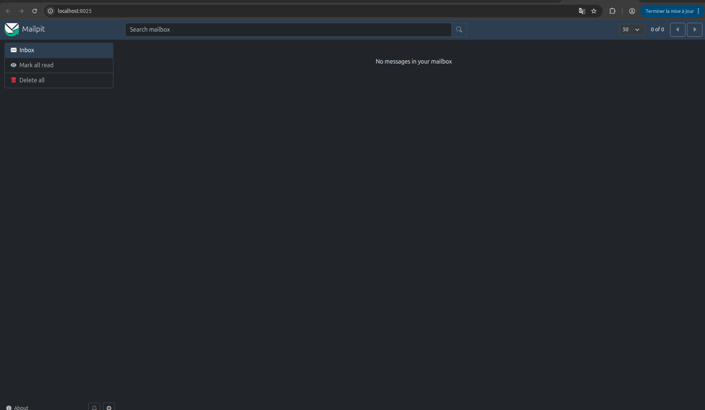

Conception et déploiement d'une stack d'entreprise complète
Retour au portfolioCe projet noté de fin de module (R4.A.08 — Outils de la virtualisation) consistait à concevoir et déployer une infrastructure d'entreprise complète via Docker Compose, en un binôme, dans un délai de 3 heures. L'objectif était de démontrer notre capacité à orchestrer des services interdépendants en respectant des principes stricts d'isolation réseau et de haute disponibilité.
Durée : 3 heures (TP noté) | En binôme | Contrainte : déploiement en une seule commande, isolation réseau stricte, évaluation automatisée




L'infrastructure complète repose sur 3 réseaux isolés et 7 conteneurs aux rôles distincts :
net_public — Zone exposée
net_db — Zone bases de données
net_auth — Zone authentification
docker-compose.yml orchestrant 7 conteneurs avec leurs dépendances (depends_on), volumes et variables d'environnement via .env.nginx.conf pour router le trafic entrant vers web_app sans exposer ce dernier directement sur le réseau hôte.master.cnf et slave.cnf, exécution des commandes docker exec pour lier les deux instances et valider la synchronisation en temps réel.KC_DB, KC_DB_URL…) pour le lier à PostgreSQL.Techniques
Humaines
Ce projet m'a plongé dans la réalité des infrastructures modernes : conteneuriser des services, les faire communiquer de façon sécurisée et les orchestrer proprement avec un seul fichier de configuration est une compétence directement applicable en entreprise. Voir l'ensemble de la stack démarrer en une seule commande après des heures de configuration est une vraie satisfaction.
La réplication MySQL a été la partie la plus délicate : comprendre le mécanisme de binlog, configurer les deux instances pour qu'elles se reconnaissent et vérifier que la synchronisation fonctionne en temps réel m'ont demandé de lire attentivement la documentation officielle et de déboguer méthodiquement. C'est aussi ce projet qui m'a appris à vraiment lire les logs Docker pour comprendre ce qui se passe dans un conteneur.
Keycloak a introduit une dimension nouvelle : la gestion des identités et le SSO sont des sujets que je n'avais jamais abordés concrètement. Comprendre le flux d'authentification — redirection vers Keycloak, obtention d'un token, validation côté application — m'a donné une base solide pour appréhender la sécurité dans les architectures microservices.